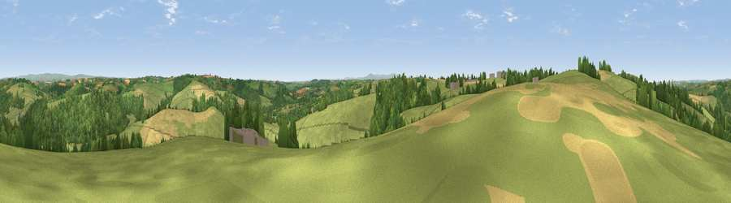

Viewpoint near Burrington
#12176 in England · top 15% of its area beats it · near BurringtonThe view, rendered

A 360° render of this exact spot computed from the terrain model, tree cover and land cover — summer colours, afternoon light, calibrated against photographs of famous viewpoints. Real trees, hedges and buildings will differ in detail.
The panorama
Grey silhouette: terrain skyline in each direction (720 bearings, Earth curvature and refraction included). Dashed green: skyline with trees (+15 m) and buildings (+8 m) as obstacles. Blue strip: how far the ground is visible on each bearing.
Where the view opens
Wedge length = distance to the farthest visible ground on that bearing (vegetation-aware). Rings at 10, 25 and 50 km.
What fills the view
62% grassland · 28% woodland · 10% cropland
Angular shares of the visible panorama (visual magnitude), not map area. Landscape diversity 0.39 (0–1 Shannon).
Key numbers
More beautiful places nearby
The staircase of upgrades: each row has a higher view potential than everything closer. Driving times are estimates from straight-line distance, calibrated against real road routing — check an actual route before setting out.
| Place | Direction | Drive | Score |
|---|---|---|---|
| Viewpoint near Burrington | NW · 2 km | ~5 min | 66.4 |
| Yollacombe Hill | N · 12 km | ~22 min | 70.2 |
| Viewpoint near High Bullen | WNW · 13 km | ~24 min | 71.2 |
| Viewpoint near Landkey | NNW · 13 km | ~25 min | 74.0 |
| Codden Hill | NNW · 14 km | ~26 min | 81.3 |
| Viewpoint near Parkham | WNW · 27 km | ~43 min | 81.7 |
| Viewpoint near Bucks Mills | WNW · 28 km | ~45 min | 84.0 |
| Viewpoint near Martinhoe | N · 31 km | ~48 min | 86.5 |
50.93723, -3.92520 · source: screening · position refined by local search. Computed location — check access rights before visiting.